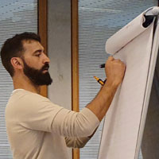

Introduction
A bit of background
Collaboration
The Dutch Ministry of Justice and Security is responsible to stimulate innovation in the practice of justice and therefore asked the DSS to carry out this 20-week long research project in collaboration with the Oostvaarderskliniek. The project aimed at exploring the needs of the caregivers within the clinic and see where there are opportunities and the potential effects of implementing new technological innovations.
The Digital Society School (DSS)
A professional learning community for training and applied science, where learners train for the digital industry. Their aim is to create an inclusive and intelligent digital society, with a human-centered design. They seek to research the impact of technology on society, develop the skills necessary to guide the transformation and pass this knowledge and these skills to a new generation of professionals.
The Oostvaarderskliniek (OVK)
A forensic psychiatric center that practices TBS in Almere. The clinic aims at keeping society safe by providing ex-detainees with mental health treatment and ensures that these patients resocialize in a secure manner. A substantial part of the field research was done with caregivers of the OVK during the autumn of 2019.
Sustainable Development Goals (SDG)
The project is working towards four of the UN’s SDGs.

Timeline
In the semester of 20 weeks, there has been done research to answer this question. This was done with the help of different techniques and tools. You can find our process in the time line below!
-

Deskresearch
The project was initiated with the team getting acquainted with the topic of TBS and forensic psychiatric care. Desk research was made as well as a visit to the Oostvaarderskliniek in Almere where we could meet caregivers and get an understanding of the facility.
Get to know more! -

Interview
To get a proper understanding of the caregivers’ work at the clinic, we conducted interviews with several caregivers of various professions. This method gave us insights into the caregivers’ motivations and struggles in their everyday work.
Get to know more! -
Cultural probes
Within design methodology ‘cultural probes’ can be used to conduct further and more in-depth research about users. Probing is used as an alternative or addition to traditional methods such as interviews/observations when these methodologies don’t provide you with enough content. Our cultural probes included a journal, sketch cards, emotional documentation for the caregivers to fill out during a 2-week period.
Get to know more! -

Co-creation Session I
In order to understand the caregivers’ awareness of current and future technologies , we conducted a workshop where this matter was investigated. The caregivers got to engage in discussions regarding the topic and get innovative by creating physical prototypes of their future envisioned technologies.
Get to know more! -
Co-creation Session II
To dig deeper into the minds of the caregivers, we conducted a workshop where their mindset towards future technologies was investigated. We presented a provocative prototype, or ‘provotype’, that was used as a conversation starter to enable a futuristic vision of the clinic and their work.
Get to know more! -

Design Fictions
We created several speculative narratives that were used to gain more insights from all involved stakeholders. The narratives were presented in the form of three short video narratives and sparked conversations around various controversial topics.
Get to know more! -

Value Proposition
From the design fictions created, we could discuss, analyze and value the topics through a ‘value proposition map’. The method enables the participants to consider the effects of a potential change from a societal, economical, ecological and psychological perspective.
Get to know more! -